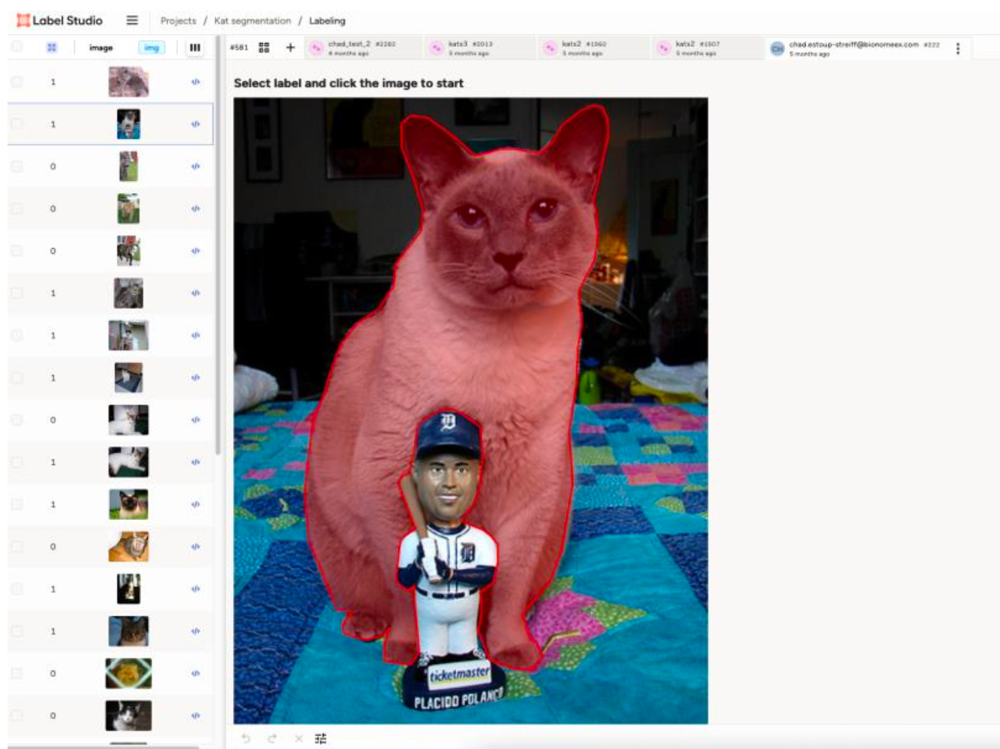
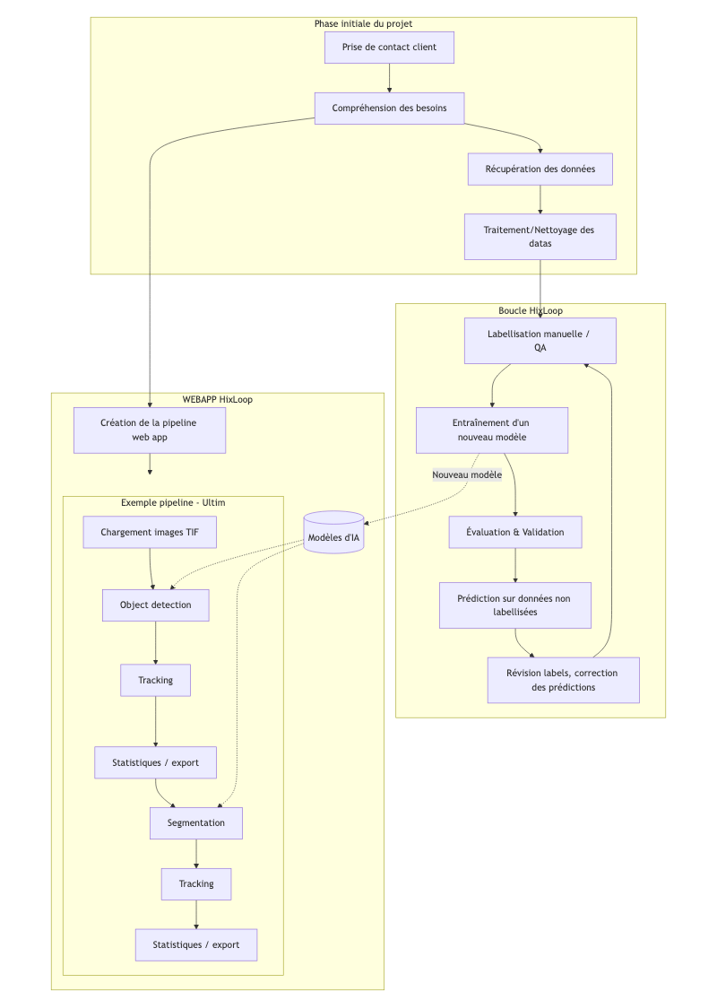

🔍 The Challenge
In research and industry alike, high-quality labeled data is the
fuel of AI — yet creating it is slow, inconsistent, and expensive.
Scientists waste hours labeling cells, insects, or particles,
instead of focusing on their analyses. The situation is even worse
when datasets are small, heterogeneous, or highly specific, where
generic pretrained models fail.
- ⏳ 80% of project time spent labeling
- 📦 Complex data (multi-channel, microscopy, aerial, etc.)
- ⚙️ No unified platform for end-to-end pipelines
- 🔁 Re-implementing the same steps in every project

Segmentation of cats
Issue of laborious manual labeling
because of precise boundaries
💡 The HixLoop Concept
HixLoop introduces a loop-based paradigm: instead
of fully labeling a dataset before training, the model assists the
user iteratively. The platform predicts, the human corrects, and the
model learns — forming a self-improving feedback cycle.
- Annotate a small subset manually
- Train the model and auto-label the rest
- Review only uncertain predictions
- Retrain — and repeat until performance stabilizes
This active learning loop lets experts spend time only
where AI is uncertain, creating exponential labeling efficiency.

HixLoop loop and modular workflow structure (in french sorry)
🧩 Extreme Modularity
Every block in HixLoop — from data import to
export — is a modular component that can be
combined freely. This makes it usable in virtually any imaging
context:
Each module can be reused, replaced, or extended — detection,
segmentation, tracking, classification, and visualization plug
together seamlessly through a unified API.
⚙️ Technical Architecture
- Backend: FastAPI
-
Frontend: Streamlit UI with dynamic pipeline
editor
-
Models: PyTorch, Detectron2 (detection), U-Net
(segmentation), custom classifiers
-
Deployment: Dockerized stack with GPU
auto-balancer
-
Annotation: Tight integration with Label Studio
-
Docs: Written with Docusaurus for
internal/external users
📊 Results & Real-World Use
HixLoop has now powerfull and usefull utilities and been deployed in
multiple scientific projects, consistently delivering significant
reductions in labeling time while maintaining high accuracy.
- 🖋️ 50% to 80% manual labeling effort
- 🎯 ≥ 95% accuracy on validated projects
- 🚀 Fully operational within 1 hours (Docker deploy)
-
🧠 Modular application: can work with diverse and complex data
Example of Bionomeex Project where Hitloop where used:
- 🦠 Cell detection and segmentation (Ultim)
- 🌾 Plant trait measurement (DeepIron)
- 🐞 Invasive species detection (Laidybug)
- 🔬 Signal detection (Abbelight)
- 🦅 Protected bird species monitoring
- 🐱 Animal behavior analysis (cats, bees)
🧠 My Role
As the lead developer and architect of HixLoop, I was responsible
for the full conception, design, and implementation of the platform
— from infrastructure to user experience. Beyond technical delivery,
I coordinated interactions between AI engineers, researchers, and
designers to ensure that each component aligned with real-world
scientific needs.
-
👷♂️ Technical leadership: Designed the full
modular architecture and coordinated code integration
-
⚙️ Engineering: Developed the backend (FastAPI,
PyTorch) and frontend (Streamlit), ensuring robust modular APIs
-
🧩 R&D integration: Combined advanced AI models
(Detectron2, U-Net) with active learning strategies
-
📊 Performance & scalability: Optimized GPU
scheduling, multi-threading, and data streaming
-
🧠 UX & product thinking: Designed an intuitive
interface to make AI accessible to non-programmers
-
🪄 DevOps: Built and deployed Dockerized GPU
environments across multi-OS infrastructures
-
💬 Collaboration: Worked closely with
multidisciplinary teams (biology, agronomy, imaging, data science)
Throughout this project, I honed key technical and interpersonal
skills:
leadership, adaptability, problem-solving, and scientific
communication. I strengthened my expertise in
machine learning, software engineering, MLOps, and workflow
orchestration, while deepening my understanding of domain-specific challenges in
microscopy, ecology, and agronomy.
Technologies mastered or reinforced:
Python, FastAPI, PyTorch, Detectron2, U-Net, Streamlit, Docker,
Docusaurus, GitLab CI/CD, Label Studio, REST API design, GPU
balancing, data pipelines, and scientific imaging formats (TIF,
ND2).